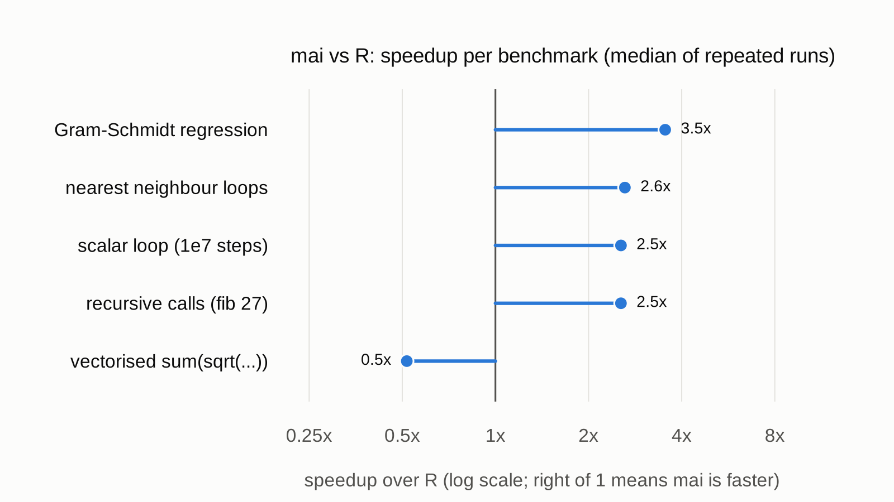

Performance¶
The thesis's aim is that ordinary loop-heavy code, the kind R users are taught to avoid, runs fast without being rewritten in C or vectorised.

| Benchmark | mai (s) | R (s) | Speedup |
|---|---|---|---|
| Gram-Schmidt regression, n = 10000, k = 100 (thesis 1.2.1) | 0.38 | 1.35 | 3.5x |
| Nearest neighbour by double loop, 500 x 500 points in 100-d (thesis 1.2.2) | 0.35 | 0.92 | 2.6x |
| Scalar loop, sum of 1/i for 1e7 steps | 0.13 | 0.32 | 2.5x |
| Recursive calls, fib(27) | 0.08 | 0.20 | 2.5x |
Vectorised sum(sqrt(x * x + 1)), 5e6 elements |
0.10 | 0.05 | 0.5x |
These are medians of 5 runs after a warm-up, on one core of an Intel Xeon
at 2.8 GHz, with mai built with make build CTUNE= and R 4.3.3 (which
byte-compiles functions by default).
Reading the results¶
- Loops, calls and scalar arithmetic are where mai wins. Type recovery
lets the compiler emit unboxed
doubleandintinstructions, and smallconsthelpers likedotprodare inlined. - Long vectorised expressions are where R wins. Each of R's built-ins is
a tight C loop, while mai evaluates
x * x + 1as separate whole-vector operations through its VM. Stream fusion of vector expressions is on the thesis's future-work list (section 1.4). - Timings for the thesis's own machine (an AMD FX-8350) are in section 1.2: 0.53 s for mai against 1.36 s for R 3.5.3 on the regression, a similar ratio to the one above.
Reproduce¶
Each benchmark is a pair of files in ../bench, name.mai and
name.R, and each defines run().
make build CTUNE=
bench/run.sh build/main 5 # writes bench/results.csv
Rscript bench/plot.R # writes docs/images/benchmarks.png
To add a benchmark, drop in a new name.mai and name.R pair that each
define run(), and give it a label in bench/plot.R.